k-Day 158｜新疆・老家
昨晚從千佛洞回來，在民宿認識了一位同樣從獨庫公路下來的新朋友。
這條路線來來去去，特別提到他當然有其原因，最初的好感是來自他說：「獨庫公路還好，沒有沈浸感。」原因和我前幾天的感受類似，最根本的原因還是過度商業化。
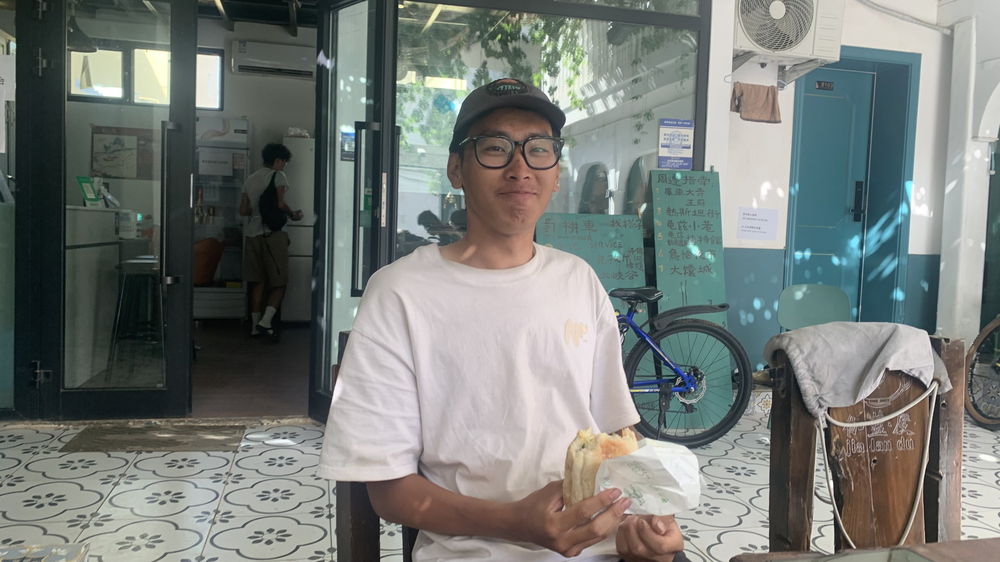
張劍是山東青島人，19歲大學生。因為腸胃炎，抵達庫車後多待了幾天，接下來要從輪台縣騎著他的愛駒穿越塔克拉瑪干到民豐。再從民豐搭車到哈薩克阿拉木圖。
現在這天氣真的沒問題嗎？正常人會這樣想。但他說：「想到沙漠就是熱」所以趁著最熱的時候去騎自行車也是很合邏輯？
19歲的年紀，已經在寮國騎過自行車，還因急性腹痛，發現必須現場割闌尾，就這樣一個人進了手術房。
「出來的時候有沒有覺得身體輕了很多？有沒有少了其他東西？」因為太荒謬了，我忍不住根據刻板印象問道。
「現在還很健康，應該沒有問題。」既然連一個人在寮國動手術都沒問題，八月的塔克拉瑪干也不用替他擔心了。
對於騎車旅行這件事，至今我都不敢說自己是真心喜歡的。「我討厭流汗，討厭喘不過氣、肌肉痛、睡在草叢裡全身黏黏的。你是真的喜歡騎自行車嗎？」
與我相反，張劍兄弟對於可以挑戰自己的意志這件事相當熱愛，比如爬坡。「騎車會進入一種心流，有時候騎著會自己全身戰慄熱淚盈眶。」聽他這麼說，我心裡有些慚愧
「但是逆風真的太討厭了！爬坡的時候你還可以維持自己的速度，逆風他是一陣一陣的」聽到如此神人同樣討厭逆風，那就不能不推薦蒙古路線了，絕對能夠提升他的意志 (ಡωಡ)
「你覺得人類的精神是什麼呢？」昨晚兩人根據馬斯克的偉業抒發彼此對未來的想像後，我提出這個問題。
「探索吧。」他說「你覺得是什麼？」
「好奇吧。」我說。
「那其實是一樣的。」他說完又補上一句「好想在火星上騎車啊。」
既然如此，我分享了自己的火星神話學假說。「以後在火星上的人類，會讀著日本的漫畫，並將裡面的故事視為祖先還活在地球時的神話。」可以想像，我們的祖先曾經活在紅土大陸和偉大航道切割的四個海域，在偉大航道的起點，曾經有一隻鯨魚，他遇到正要前往偉大航道的海賊，他跟海賊說：「等你們繞行一圈後，我們會在這裡見面。」大概是這類的神話故事。
「這不是像那個什麼北歐神話......」「對呀，我想像的火星神話就是這類日本動畫。」作品因為有著完整的世界觀，因此足以創造出另一個世界，讓讀者相信這些世界是存在的。
另外是在中國騎行的小物分享。
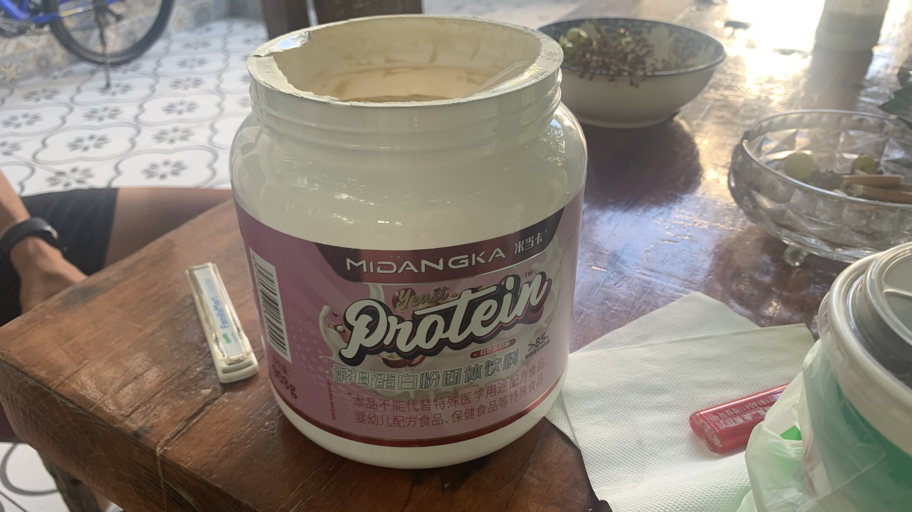
雖然已知使用淘寶和菜鳥驛站，但是我買的東西大多還是迪卡儂或者本來就熟悉的國外品牌，在這裡買價格比台灣貴了不少。張劍推薦使用拼多多，上面的東西比淘寶便宜，比如這款酵母蛋白粉，價格是我買的蛋白粉的1/3。
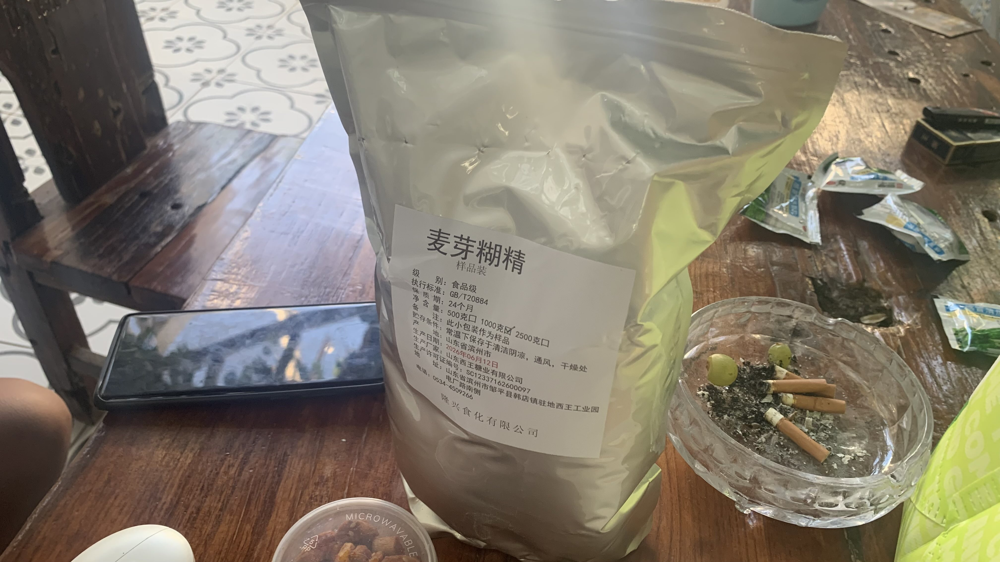
我吃的迪卡儂能量膠也不便宜，同樣提供快速吸收的碳水，這袋麥芽糊精相較之下根本屬於不用花錢吃飯的價格。
這款電解粉除了便宜，話梅味還很符合亞洲口味，也許可供未來的騎行者參考。
聊天聊到下午兩點左右才離開民宿。開始騎車後我稍微反省了自己，對於一個青島人不斷宣揚自己對日本文化的愛好恰當嗎？畢竟從他那裡得知日本在青島的作為，與台灣是完全不能相提並論的兩個層級。若是有個外國人，憑藉著對蔣介石的喜愛，決定親身來到台灣環島，在談話過程中不時分享國民黨的人文精神，我應該會禮貌淡出對話。張劍兄弟雖然只有19歲，卻保持著禮貌沒有反駁，關於這點事相當佩服的，也因此在騎行日誌裡即便簡短，還是希望可以記錄下這次相遇。
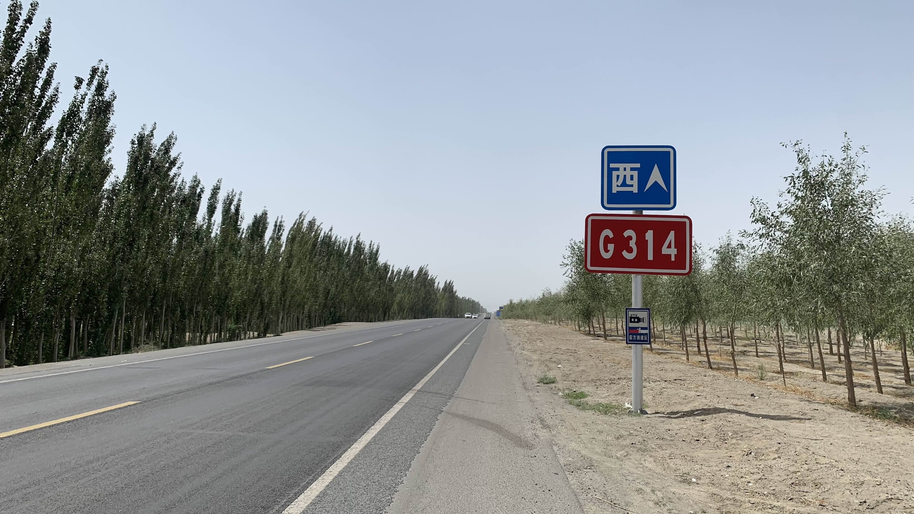
接下來幾天的路線有兩條，一條是延續獨庫的G217，路程較短，直通喀什；另一條是G314，貼著北邊的山脈腳下，先到溫宿，也就是大唐西域記裡的姑墨，我給自己選了後者。
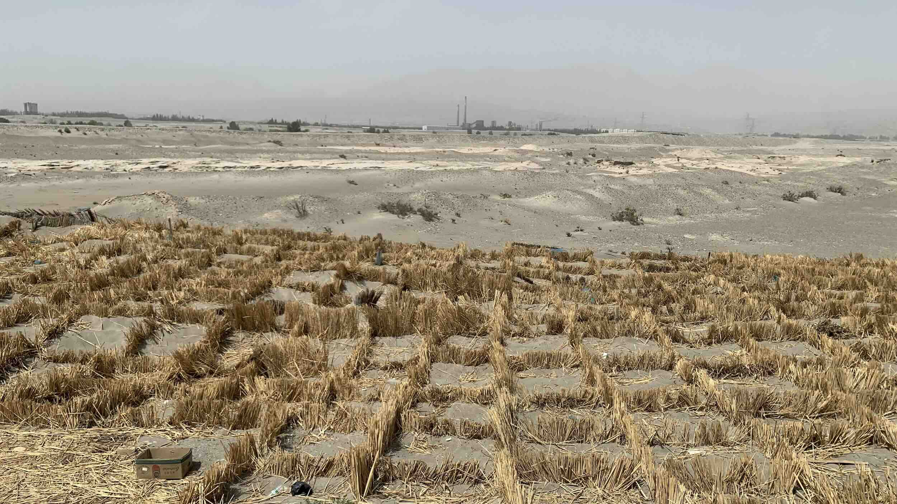
路邊出現為了治沙設置的稻梗方格，畢竟也算是沙漠邊緣，這裡刮起風，沙塵量應該相當可觀。
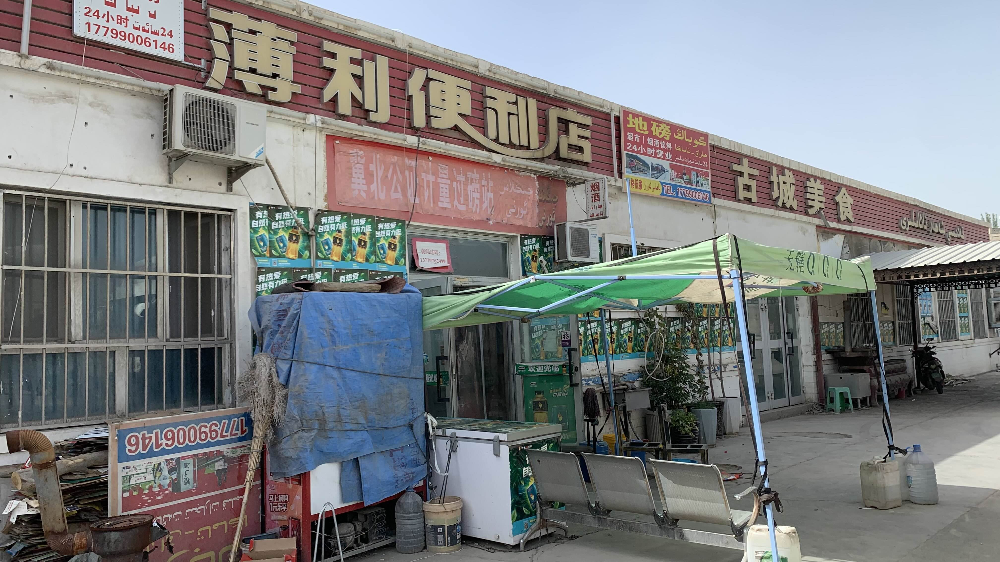
四點多就到了今日落腳地「新和」的邊緣，走進一家有遮陽棚的商店買飲料。老闆開了冷氣讓我進去坐著休息。
這家店是新開的，經營了一年多，聊天時老闆好奇台灣的消費。我們拿出冰箱裡的600ml統一阿薩姆奶茶當作基準。老闆說了進價，我上網隨機查詢48瓶裝的量販價格，台灣略貴0.5元，我感覺沒差多少，但老闆說還是貴了許多。
老闆一家都是約莫三十年前從四川到新疆謀生的，「最早是大姐先來，我再過來。現在爸爸媽媽也都在這裡。」「這裡還是比起老家要好，老家那裡都是山，你要出來也不好做生意，這裡都是平的。」聽到他說老家的時候有點恍惚，想起在昌吉露營時的工作人員也說過這個詞：「這裡比老家好多了，老家都是蚊子，這裡沒有。」
新疆包容了全國各地想要謀生的人口，把這一切簡化成「援疆」，單方面地輸出自己對新疆基礎建設與經濟發展的貢獻，卻絕口不提新疆為了容納全國各地湧入的人，犧牲了多少自己的文化傳承，又為他們的人生提供了多少機會......很有那麼一點台灣某黨的即視感。
老闆以前是在市裡擺攤做生意的，他推薦我晚上可以去大唐都護府睡覺，那裡人少，還有廢棄的建築晚上沒人都可以進去。「剛蓋好的時候在那裡面賣過東西，沒多久就沒有人潮了。」
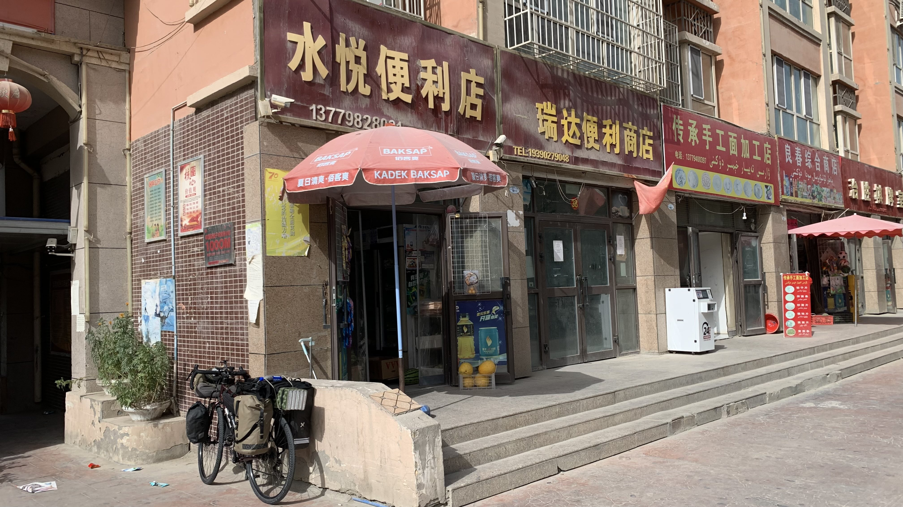
聽從老闆的話，直接騎到都護府圍牆邊，找了一家順眼的便利店進去採買食物。老闆人很好，因為我沒有多的零錢現鈔，於是免費送我一顆番茄。
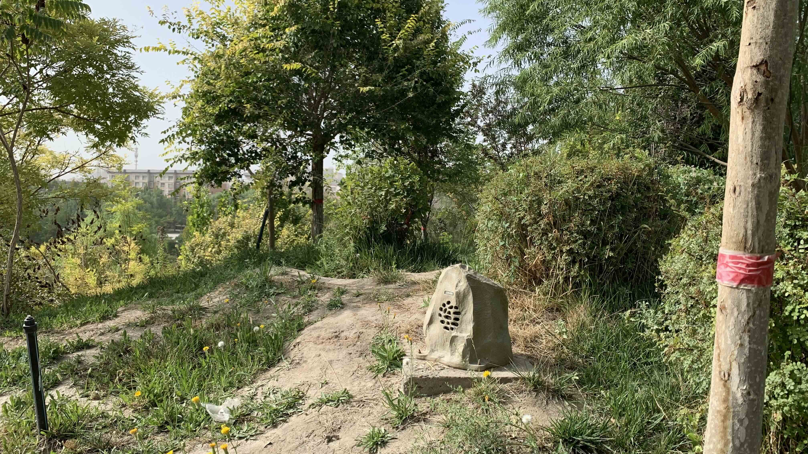
進入都護府園區繞了一圈，發現偽裝成石頭的播音設備，在蘇巴什佛寺參觀時，木棧道旁也設置了這樣的音響。聽說維族喜歡唱歌跳舞彈奏樂器，也許這是當地文化也不一定。
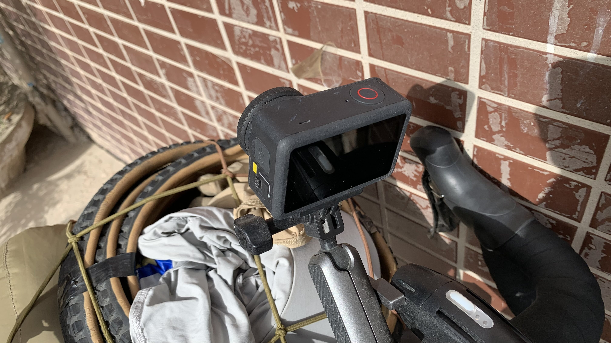
在園區裡的涼亭看小朋友釣魚，想拿出麵包配著吃，發現二十三號的把手上少了什麼。剛才付錢時順手把相機放在商店櫃台的桌上了。一路衝刺衝回店裡，老闆看到我喘著大氣進門，立刻從櫃檯邊拿出運動相機。
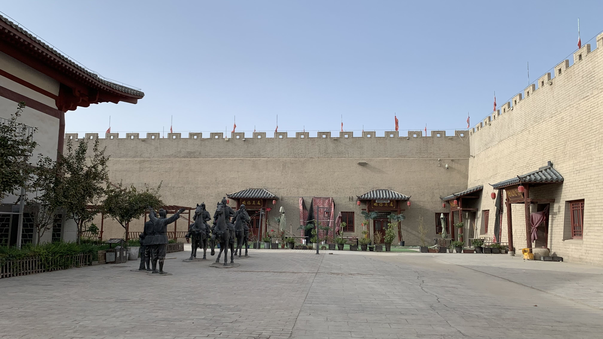
說是園區，其實就是仿古建築的市集，每個門內都是已經歇業的商店，看店名以前還有VR體驗館。
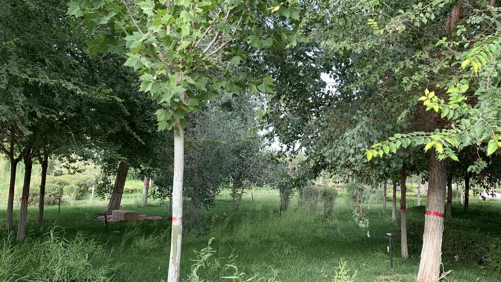
園區裡確實沒什麼人，但偶爾還是有零星進來拍照的觀光客。不想等天黑才扎營，還是選了樹叢下石頭後的角落。此處有許多螞蟻蚊蟲，內帳拉鍊已經壞了一個，另一個往下拉的時候要捏著兩邊的布小心翼翼才能拉緊，否則晚上睡覺時碰到就會裂開。
「新疆」從字面意義上來看，就是新的疆土。等人類到火星生活後，新的疆土的人類也會把地球當成老家。族群面對新的融合，彼此如何看待對方的付出與犧牲，到了那時候，同樣的問題大概也會被搬到火星上。
今日花費：茶芭蕾 32.62、德克士 31.4 元